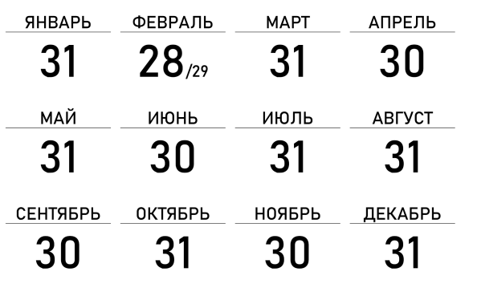
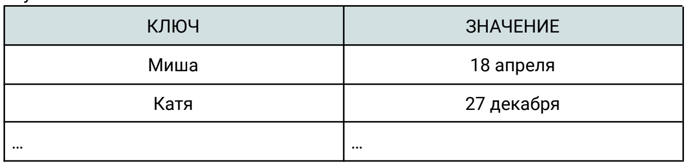
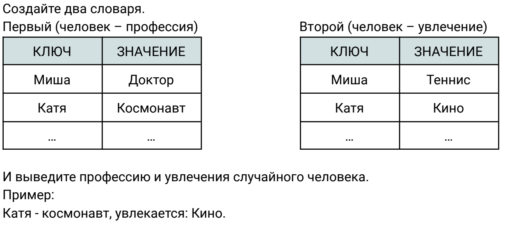

Практическое занятие 14
Повторение и Словари
Напишите программу, которая вводит с клавиатуры номер месяца и день и определяет, сколько дней осталось до Нового года.
При вводе неверных данных должно быть выведено сообщение об ошибке.

На даче у Вити были обнаружены следы НЛО, об этом написала газета UFO Today. Так
как в газетах часто склонны преувеличивать масштабы событий, необходимо написать
программу, которая будет проверять, написали ли правду в газете. Дача Вити имеет
форму круга радиусом R1. В газете написали, что нашли два круга НЛО. Один из них
имел радиус R2, второй - радиус R3. По информации из газеты круги не пересекались,
ни один из них не лежал внутри другого. При этом, они, возможно, касались друг друга
и/или границы поля.
После завершения работы программы выведите слово True, если информация, опубликованная в газете, может соответствовать правде, и слово False в противном случае.
После завершения работы программы выведите слово True, если информация, опубликованная в газете, может соответствовать правде, и слово False в противном случае.
В английском языке буква «x» чаще произносится как «кс», но бывает, что и как «з».
Например, транскрипция слова xerox — [ˈzɪərɔks].
Напишите функцию, которая будет принимать строку на английском языке и заменять все «x» на «cks».
Исключения:
● Если слово начинается с буквы «x», меняем ее на «z»
● Если слово представляет собой одиночную букву «x», меняем ее на «ecks»
Все «x» будут в нижнем регистре.
Например, транскрипция слова xerox — [ˈzɪərɔks].
Напишите функцию, которая будет принимать строку на английском языке и заменять все «x» на «cks».
Исключения:
● Если слово начинается с буквы «x», меняем ее на «z»
● Если слово представляет собой одиночную букву «x», меняем ее на «ecks»
Все «x» будут в нижнем регистре.
Напишите функцию, показывающую, отсортирован ли переданный ей в качестве параметра список (по возрастанию или убыванию).
Функция должна возвращать True, если список отсортирован, и False в противном случае. В основной программе запросите у пользователя
последовательность чисел для списка, после чего выведите сообщение о том, является ли этот список отсортированным изначально.
Создайте словарь из 10 терминов
Создайте словарь из людей и их дней рождений. Найдите день рождения
случайного человека.


Добавьте к словарям из третьего задания, еще пару людей их увлечения и профессии.
Поменяйте увлечение случайного человека на ХОККЕЙ
Удалите одного человека из двух словарей.